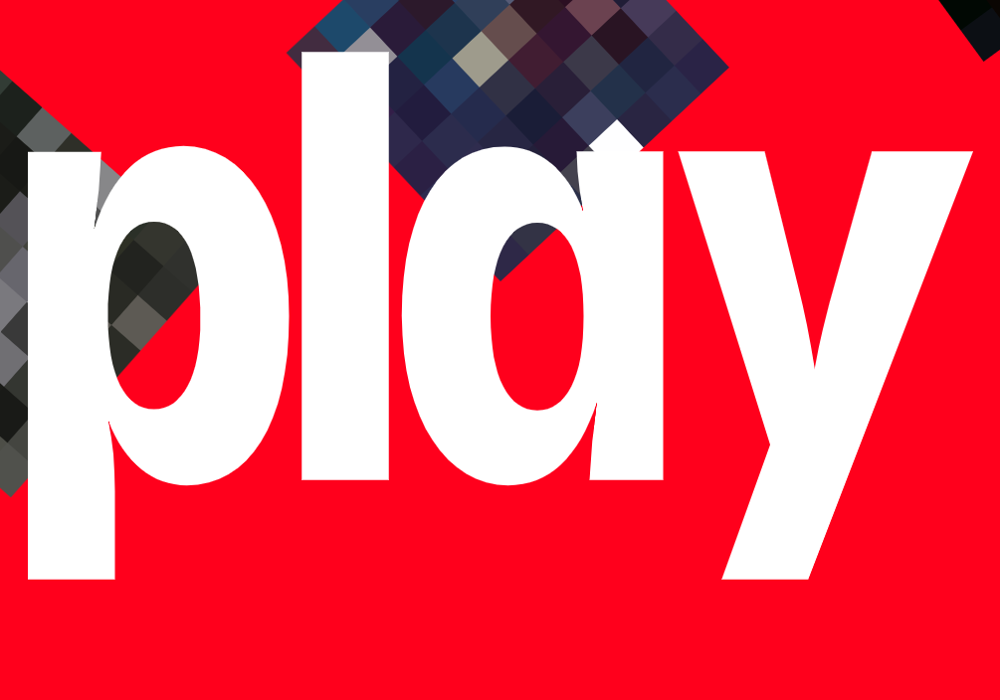
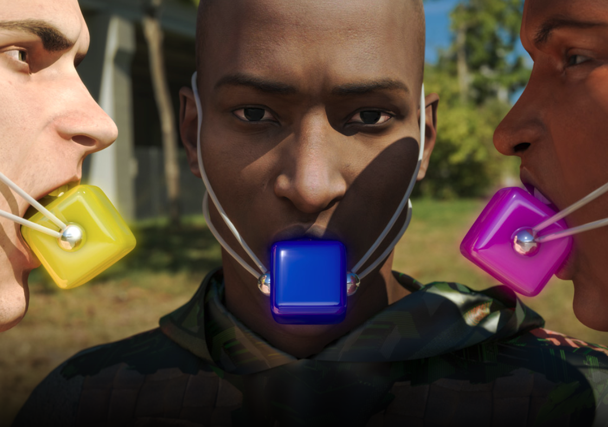
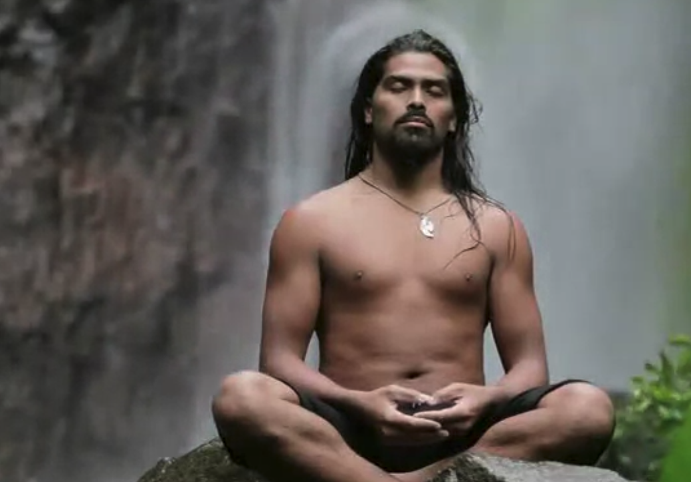
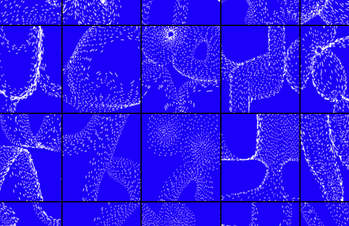
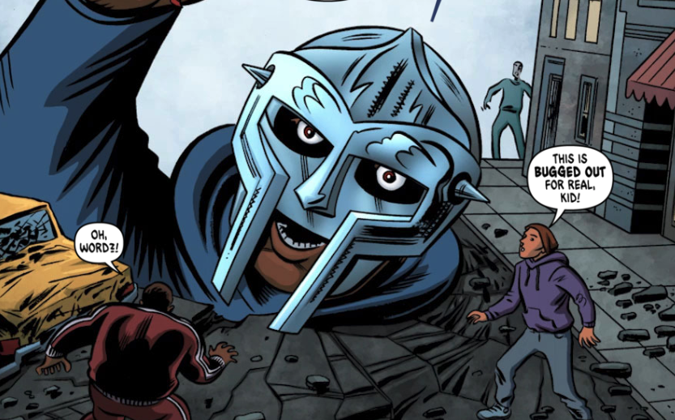
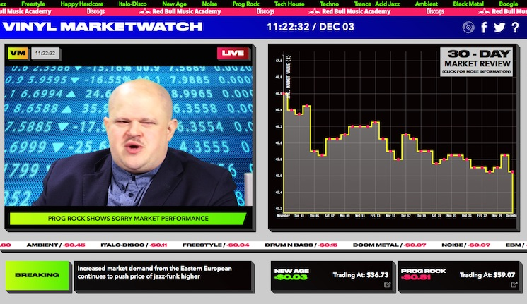
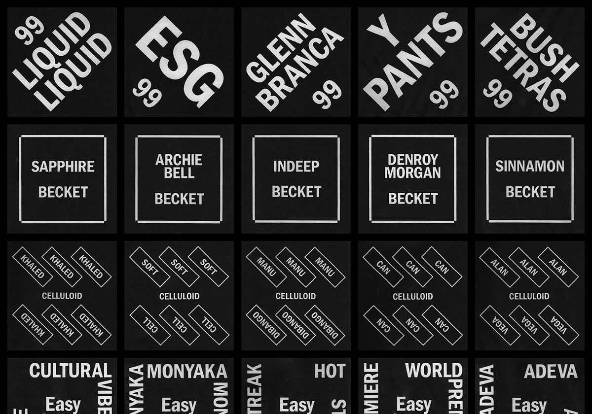

Digital Projects
I've been building things on the web for over two decades now. Whether it's interactive experiments, data visualizations, or archival deep dives, I love finding new ways to bring ideas to life online. Here's a selection of some of that work.

Album Art IQ
This was an online game meant to test your memory of iconic album covers. Once you started the game, album covers would slowly became less pixelated. The faster you identified the record sleeve, the more points you got.
Game RBMA w/ Folder Studio

Future Instruments 2214
For this project, Red Bull Music Academy asked future-inclined artists and thinkers like Tyler, The Creator, Jeff Mills, and Konstantin Grcic to describe what type of musical instruments would exist in 200 years. Kim Laughton then brought their descriptions to life.
Interactive RBMA w/ Animade (Mike Guppy & James Chambers)

Eternal Bliss
This was a tongue-in-cheek guided meditation website. Visitors could swap out the soothing narration and background music on the fly, mixing and matching their way to inner peace — or total absurdity.
Satire RBMA w/ James Pants

Shattered Streams
An experiment in musical ephemerality. We presented original music from 31 artists — including William Basinski, Fennesz, and Wolf Eyes — each track available to stream on a loop for a maximum of 24 hours. Over that time, the audio slowly degraded until it simply disappeared. You either caught it or you didn't.
Experiment RBMA w/ Folder Studio

Online Comics
I commissioned four animated comic works celebrating musicians with strong ties to Japan. The lineup: MF DOOM (written by Gabe Soria, art by Dean Haspiel), DJ Krush (by Haruhisa Nakata), Damo Suzuki (written by Zack Soto, art by Connor Willumsen), and Isao Tomita (written by Jordan Ferguson, art by Yuko Ichijo). The project was managed by Marc Weidenbaum. Each comic was then animated for the web.
Animation RBMA w/ Animade (Mike Guppy & James Chambers)

Mixing Board
An interactive audio toy that let visitors control the BPM and volume of individual parts within different tracks. As you adjusted the mix, the visual environment shifted in response — the emotional intensity of the page followed the music.
Audio RBMA w/ Folder Studio

Vinyl Marketwatch
A daily data visualization tracking market movers by genre within the Discogs vinyl marketplace — think stock ticker, but for records. Teki Latex anchored the project with regular video commentary on the trends.
Data RBMA w/ James Pants

Endless 80s NYC
An infinite scroll through ten of the most influential New York independent record labels of the 1980s. Folder Studio curated over 700 images — album covers, found footage, and original content — to celebrate the vibrant energy and blending of cultures that defined the era.
Interactive RBMA w/ Folder Studio
RBMA Daily
I worked with A Color Bright to launch RBMA Daily, a music editorial site built to be flexible enough to accommodate ambitious visual storytelling. That meant I could commission illustrators and animators for individual features — like the pigtail illustrations by Megan Bishop for a Meredith Monk profile or the animated GIFs by Benedikt Rugar woven through a Jean-Michel Jarre live feature — knowing the platform could handle whatever we threw at it.
Editorial RBMA w/ A Color Bright